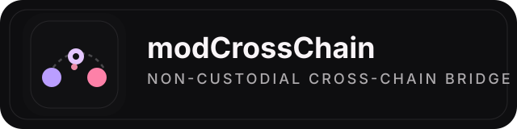
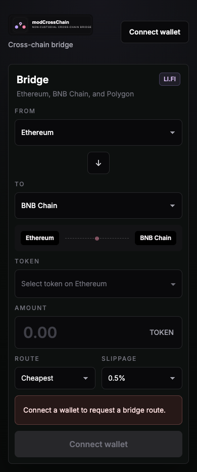
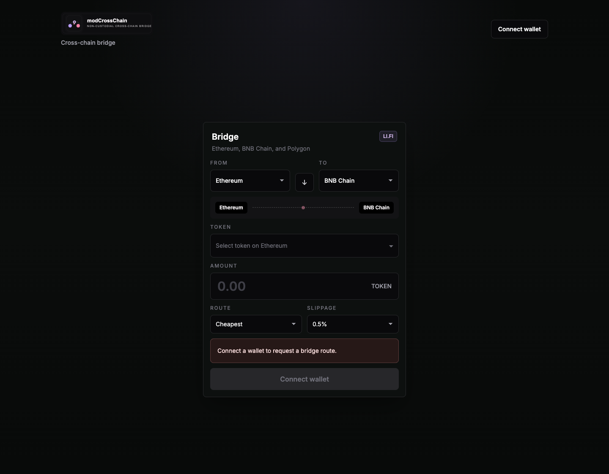

Route intelligence
Compares cheapest, fastest, and best received routes with visible gas, bridge fee, and platform fee disclosure.

modCrossChain is a clean, dark, non-custodial bridge interface for Ethereum, BNB Chain, Polygon, Base, Arbitrum, and Avalanche. It requests the best route from LI.FI, sends transactions through the user's wallet, and keeps private keys entirely client-side.

Interface
The product focuses on the decision surface that matters: chain choice, token lookup, amount entry, route cost, ETA, and transaction follow-through. The dark visual system keeps attention on execution rather than decoration.

Product Highlights
The interface is designed to feel fast and trustworthy: source and destination chain selectors, searchable token metadata, debounced route requests, route cost visibility, and a transaction status modal that follows the LI.FI execution lifecycle.
Compares cheapest, fastest, and best received routes with visible gas, bridge fee, and platform fee disclosure.
All signing happens in the connected wallet. No custom custody, no private key handling, no backend signer.
Includes local transaction history, copy-hash actions, retry-friendly failure states, and explorer links.
How It Works
MetaMask or WalletConnect establishes the client-side signer and detects the active chain.
LI.FI resolves the cheapest, fastest, and best received route candidates for the selected token and destination.
The route is executed in the wallet, with status updates, transaction hash visibility, and explorer links.
Stack
The bridge UI is intentionally lightweight: App Router for structure, wagmi + viem for wallet actions, and LI.FI for cross-chain route discovery and execution.
App Router structure, production build pipeline, and typed React 19 client UI.
Dark editorial-finance styling with compact spacing and mobile-first layout control.
Client-side wallet connection, chain switching, balance checks, and signer access.
Aggregator route search and route execution with no custom bridge protocol to maintain.
Supported Networks
Security
Monetization
Expansion
Launch
GitHub Pages is a strong fit for a static product page, release notes, onboarding, screenshots, and marketing copy. The live bridge application itself runs better on Railway where the full Next.js app can be deployed and updated independently.
Operations
The release now includes draft Terms and Supported Jurisdictions pages for both the live app and GitHub Pages. They should be reviewed by counsel before broader launch.